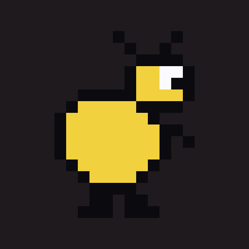
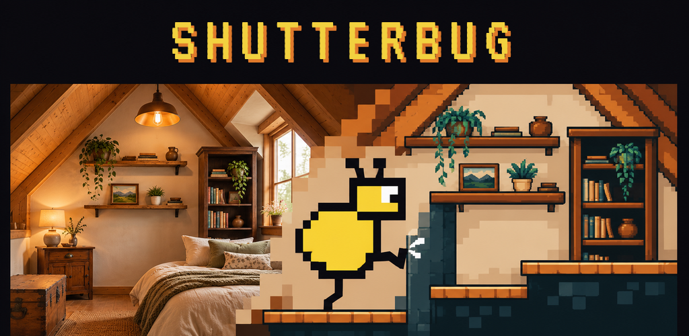
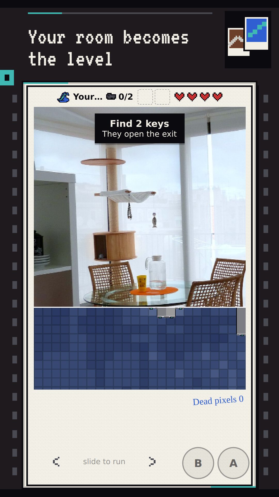
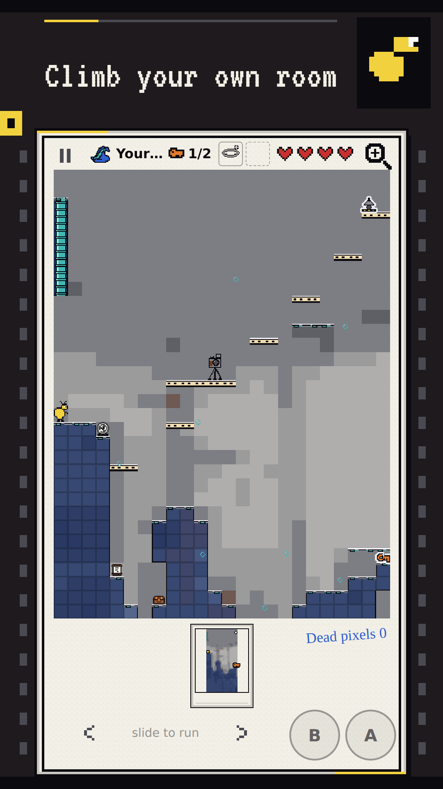
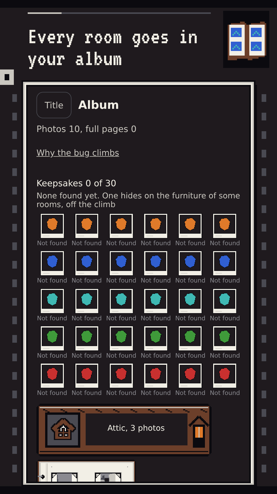
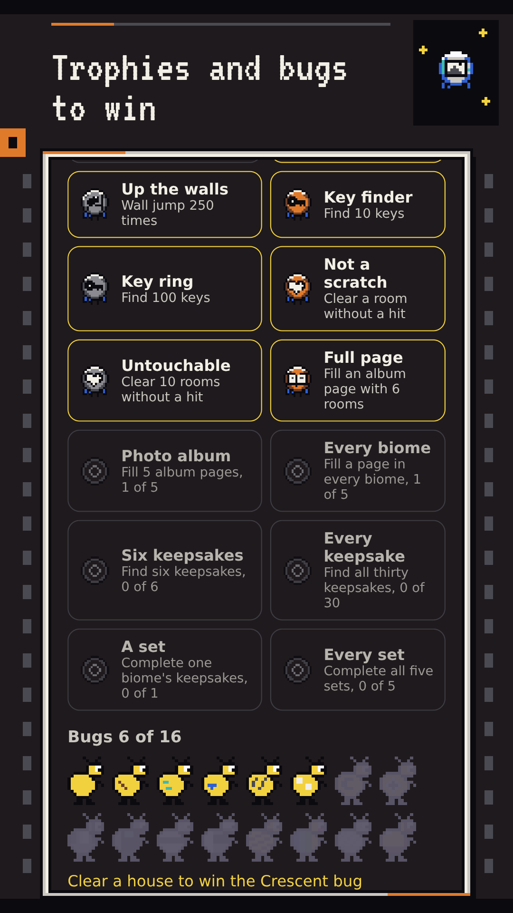
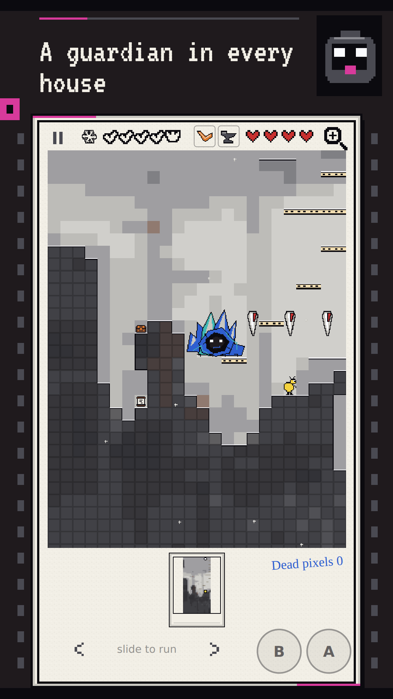
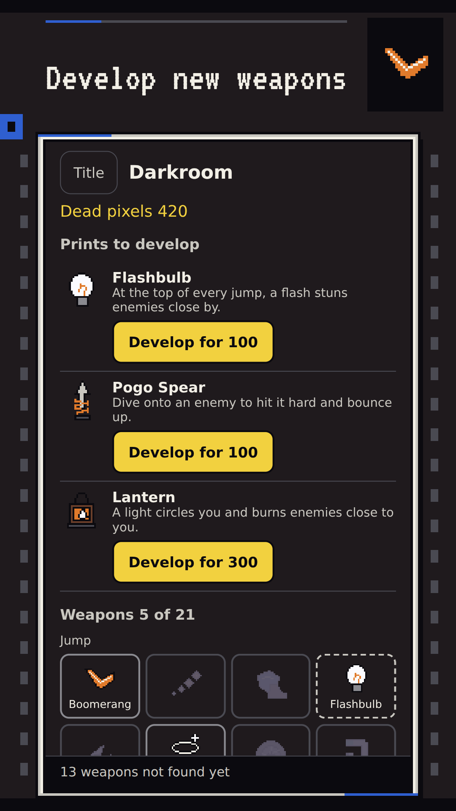

Tap Copy, then paste; the text is copied exactly. Where there is nothing to paste, the answer to pick is in bold.
Prepared 2 November 2026, updated 3 November (the album, trophies and bugs, the Daily Room and the Darkroom's start pick, sb-m1-21) and 10 November (film and ranks, the thirty keepsakes, the larger cast, the Loom and the Wasp, the crosswind and the crumbling stairs, sb-m2-24). ⛔ Stephen's rule: nothing is submitted until the game is good. This page waits for that call.
Live once sb-m1-12 is deployed (privacy.html is in the served set from then).
0. Create app
App name (30 characters at most)
Shutterbug: Photo Platformer
The phone shows Shutterbug under the icon (the manifest's short name).
Default language
English (United States)
App or game
Game
Free or paid
Paid, $0.99 (Stephen, 2 Nov). A paid app can later become free; a free app can never become paid. Nothing is sold inside the game.
1. The content of the app
App access
All functionality is available without special access. No login, nothing restricted.
Ads
No, my app does not contain ads.
Content rating (IARC questionnaire)
Category: Game. Email for the certificate: stephen@skywolfstudio.com
Violence: Yes, fantasy or cartoon violence, mild: a small bug defeats clay monsters and a clay guardian with toy like weapons (a boomerang, a flash, sparks). No blood, no gore, no realistic violence, no humans harmed.
No to all of these: blood, fear or horror, sexual content, bad language, drugs or alcohol or tobacco, crude humor, gambling or simulated gambling (Dead pixels are earned in play and only develop weapons), users interacting (no chat, no accounts), sharing location, digital purchases (nothing is sold inside), unrestricted internet access (no link out of the game in the Play app: the arcade exit is hidden and refuses there).
Sharing content: Share only hands a level code link to the phone's own share sheet; answer as Hues did (No).
Expected rating: Everyone 10+ or Everyone (IARC decides from the violence answer).
Target audience
13 and over (as Flock the World, Tumble and Hues). Under 13 brings in the Families policy. Could it appeal to children: No.
Data safety
Collects data: No. Shares data: No. The summary must read "No data collected" and "No data shared".
The photo: the camera or picker hands one picture to the game, which shrinks it to a 24 by 48 grid on the device, builds the level and lets the picture go. It is never stored by the game and never transmitted, so under Play's definitions it is not collected (data processed only on the device and not sent off it). Saves stay in the phone's local storage. No account, no analytics, no ads.
Government, financial, health, news, advertising ID
No / none / not used.
2. How the app is organized and presented
App category
Game, then Arcade (or Action; Play has no Platformer category)
Tags (up to 5, the nearest names Play offers)
Platformer, Pixel art, Single player, Offline, Casual
Contact email
stephen@skywolfstudio.com
Website
https://skywolfstudio.com
Short description (80 characters at most)
Take a photo of any room and climb it as a pixel platformer level.
Full description
Take a photo of any room and Shutterbug turns it into a level you can climb.
Your bookcase becomes a ledge, the top of a wardrobe becomes a summit, and the lamp in the corner becomes the exit. Every photo builds a different climb, and every level is proved climbable before you play it.
YOUR PHOTO PICKS THE WORLD
The room's own colours choose its world: dusty Attic, slippery Frost, the floaty Deep, the sticky Overgrowth and the burning Ember, each with its own look and its own monsters. Twenty four kinds in all: some lob, some drop from the ceiling on a thread, some hide in a shell and some split in two.
Rooms have tricks of their own as well. A crosswind breathes through the Attic's window, and old stairs crumble a step behind you.
FIND THE KEYS
The exit is locked. Up to three keys hide on your own furniture, some of them guarded. Bring them all to light the lamp.
21 WEAPONS AND CHARMS
Sixteen weapons and five charms. Every jump, dive and dash can fight for you: a Boomerang, a Flashbulb, a Halo, Pogo Spear, Pile Driver, Ember Stomp and more, plus charms like the Lantern and Second Wind. Carry blueprints out of a room and develop them in the Darkroom to add them to the chests, then pick the one every house starts with.
HOUSE RUNS
Climb five photos in a row, each tougher than the last. A guardian waits in the last room, and it fights in the colours of your room. The Cobweb Loom drops its strands in the Attic, the Lantern Wasp darts through the Ember, and every guardian fights harder once it is hurt. Clear a house to win new looks for your bug.
FILM AND RANKS
Every room you clear earns XP. Climb ten ranks, from Shutterbug to The Light. Ranks open film stocks: load Frost film or Ember film and any photo develops as that world.
THIRTY KEEPSAKES
Small keepsakes hide on the furniture of some rooms, off the climb: a Dusty Globe, a Ship in a Bottle, the Coal Heart. There are six in each world. Complete a world's set and its photo frame is yours.
THE DAILY ROOM
Clear your first house and the Daily Room opens: a new room every day, the same one for everyone. The first clear each day leaves a weapon print in your Darkroom, and your days played only ever count up.
YOUR ALBUM
Every room you clear is pinned in your album as a pixel photo, on the page of its world. Fill a page with six rooms, then fill every world. An empty page tells you what to shoot next: greens for the Overgrowth, reds for the Ember, a bright white room for the Frost.
TROPHIES AND BUGS
Twenty trophies to earn, from your first room to your hundredth, and fifteen more bugs and seven photo frames to win by clearing houses. You always see what the next prize is.
SHARE A ROOM
Send a level to a friend as a link and they climb your room on their own phone.
Your photos never leave your phone: the level is built on the device and the picture is let go. No account, no ads, no data collected, and it plays offline.
From Sky Wolf Studio.
Pictures
App icon 512 x 512 (no alpha)

Feature graphic 1024 x 500

Phone screenshots 1080 x 1920 (the real game, captioned)






On Astra's round 7 frames (3 Nov), reshot 10 Nov from sb-m2-24. Rebuilt in two lines: node store/shutterbug-play/shoot.mjs --photo YOUR_ROOM.jpg (the six raws in raw-r7/ from the real game at 405x720, dpr 32/15, all from that one photo), then node tools/store-kit/compose.mjs store/shutterbug-play/kit.json. Tonight's drafts use a CC0 living room; a room of yours makes shots 1, 2, 3 and 5 yours.